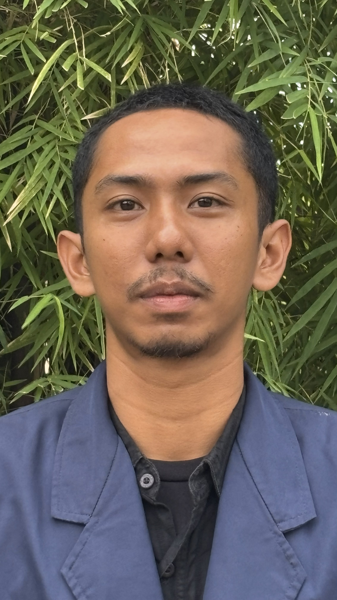
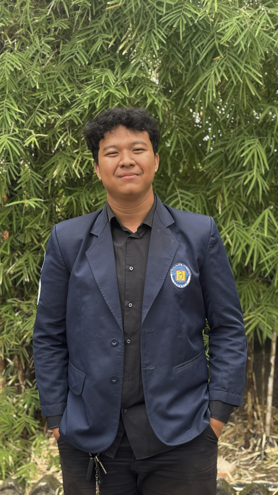
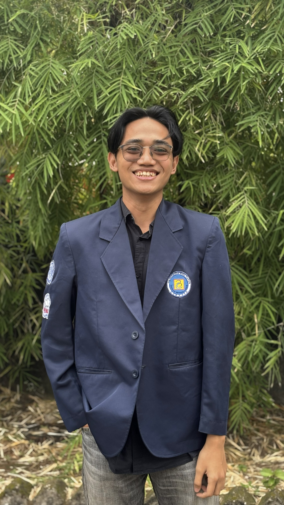
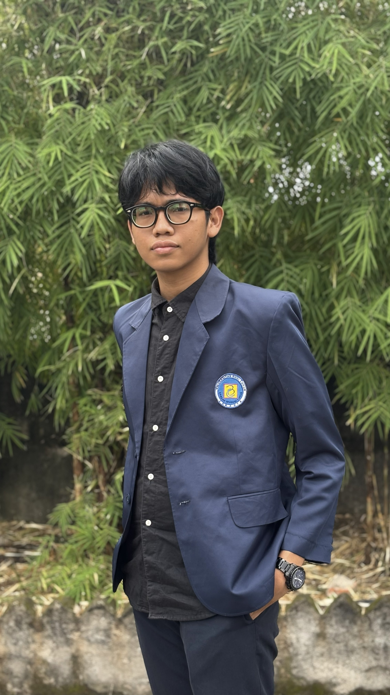
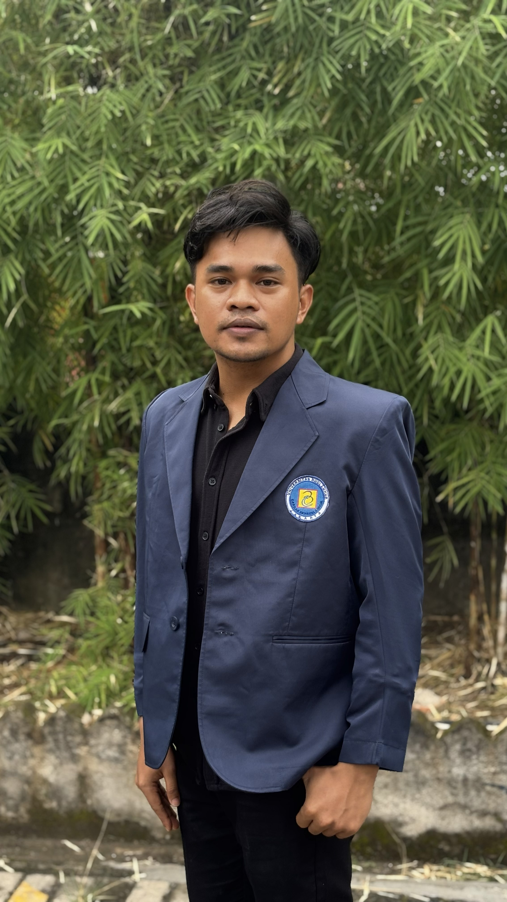
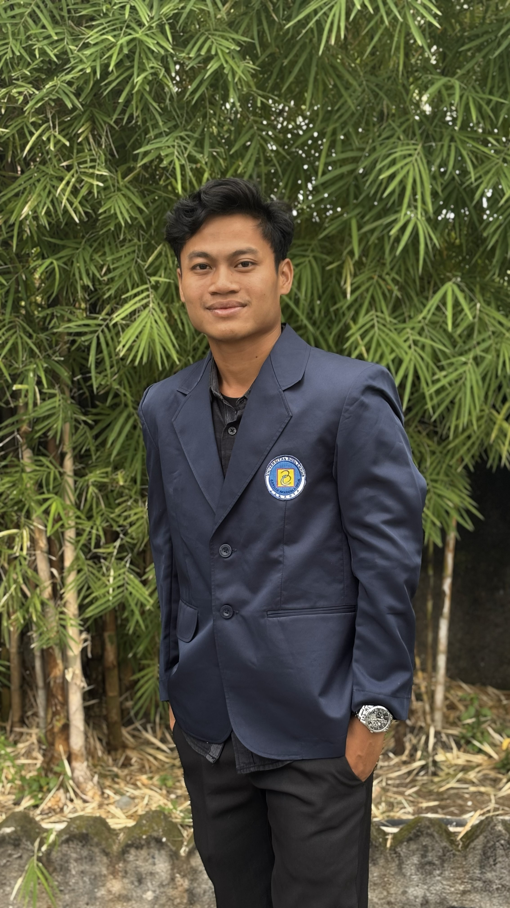
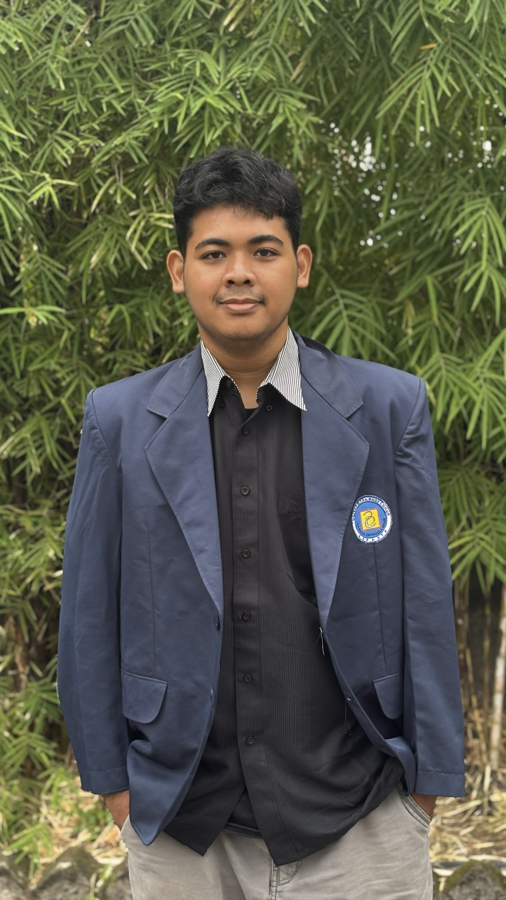

Rohman Syah
2234500144 • Ketua
Kelompok 02 – Universitas Budi Luhur. Solusi inovatif untuk pendidikan, infrastruktur sosial, dan digitalisasi pemerintahan desa.
Klik ikon untuk informasi
Delapan anggota dengan dedikasi tinggi. Klik kartu untuk melihat profil lengkap.








Desa Kerten adalah komunitas dinamis yang fokus pada pengembangan holistik melalui pendidikan, infrastruktur sosial, dan transformasi digital.
Empat program inti dengan fokus pada pemberdayaan masyarakat desa.
Penyuluhan akses pendidikan dan dukungan akademik.
Gotong-royong dan perbaikan infrastruktur.
Panduan pengembangan karir pelajar.
Transformasi digital administrasi.
Galeri kegiatan program KKN Kelompok 02.